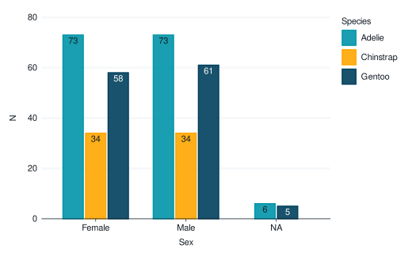
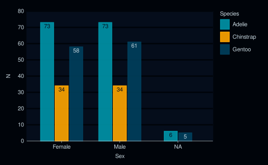

A colour aesthetic that automatically contrasts with fill. Can be spliced into ggplot2::aes with rlang::!!!.
Usage
aes_contrast(col_pal = c("black", "white"))Arguments
- col_pal
A vector of a dark colour and then a light colour. Defaults to
c("black", "white"). Uselightness,greynessordarknesswith the applicable*_mode_*theme.
Examples
library(palmerpenguins)
library(dplyr)
#>
#> Attaching package: ‘dplyr’
#> The following objects are masked from ‘package:stats’:
#>
#> filter, lag
#> The following objects are masked from ‘package:base’:
#>
#> intersect, setdiff, setequal, union
library(ggplot2)
library(stringr)
penguins |>
count(species, sex) |>
gg_col(
x = sex,
y = n,
col = species,
position = position_dodge2(preserve = "single"),
width = 0.75,
x_labels = \(x) str_to_sentence(x),
) +
geom_text(
mapping = aes(label = n, !!!aes_contrast(lightness)),
position = position_dodge2(width = 0.75, preserve = "single"),
vjust = 1.33,
show.legend = FALSE,
)
#> Warning: Ignoring unknown parameters: `contour`
#> Warning: Ignoring unknown parameters: `contour`

penguins |>
count(species, sex) |>
gg_col(
x = n,
y = sex,
col = species,
position = position_dodge2(preserve = "single"),
width = 0.75,
y_labels = \(x) str_to_sentence(x),
mode = dark_mode_r(),
) +
geom_text(
mapping = aes(label = n, !!!aes_contrast(darkness)),
position = position_dodge2(width = 0.75, preserve = "single"),
hjust = 1.33,
show.legend = FALSE,
)
#> Warning: Ignoring unknown parameters: `contour`
#> Warning: Ignoring unknown parameters: `contour`
